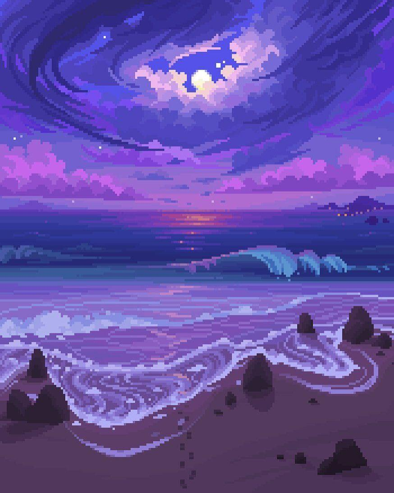
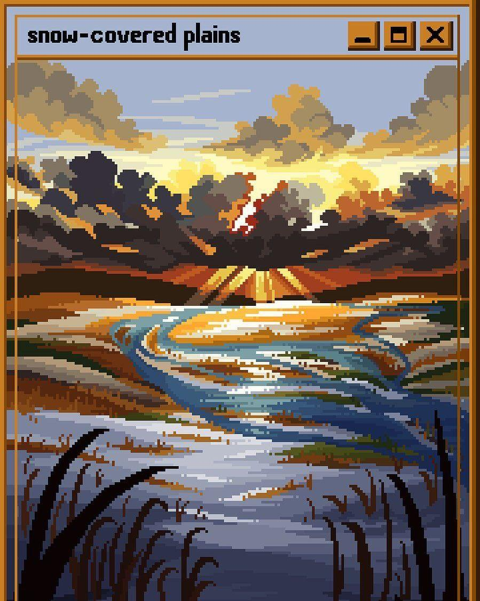

Avendaño Villegas Brandon
Pixel Art
El pixel art o arte de píxel es una forma de arte digital, creada a través de una computadora mediante el uso de programas
de edición de gráficos rasterizados, donde las imágenes son editadas al nivel del píxel. Las imágenes de la mayor parte de los
antiguos videojuegos para PC, videoconsolas y muchos juegos para teléfonos móviles son consideradas obras de pixel art. Posee
similitudes con el puntillismo, difiriendo principalmente en las herramientas para la creación de las imágenes: computadoras y
programas en lugar de pinceles y lienzos.
La terminología pixel art fue publicada por primera vez en 1982 por Adele Goldberg y Robert Flegal del Centro de Investigación
de Xerox en Palo Alto.
El arte de píxel debe su origen principalmente a los videojuegos, sobre todo a juegos arcade clásicos como por ejemplo
Space Invaders (1978) o Pac-Man (1980) y consolas de 8 bits como la Nintendo Entertainment System (1983) y la Sega Master
System (1985).
El término pixel art fue publicado por primera vez por Adele Goldberg y Robert Flegal del centro de investigación Xerox
Palo Alto en 1982.2 El concepto, sin embargo, se remonta al desarrollo del sistema SuperPaint de Richard Shoup en 1972,
también en Xerox PARC.3
Algunas formas de arte tradicional, como puede ser el bordado de hilos contados (incluyendo el punto de cruz) y algunos tipos
de mosaico y trabajos con abalorios, son muy similares al arte de píxel. Estas formas de arte construyen imágenes a partir de
pequeñas unidades de color de forma similar a los píxeles en la computación digital moderna. Un concepto similar a una escala
mucho mayor puede ser visto en el Festival Arirang de Corea del Norte.
Tecnica
Los dibujos a menudo comienzan con una imagen de partida denominada line art, que constituye las líneas básicas que definen al
personaje, construcción o cualquier objeto o cosa que el artista pretenda dibujar. Estas líneas son por lo general trazadas a mano
y posteriormente escaneadas.
La limitada paleta a menudo solicita el uso del llamado tramado con el objetivo de lograr diferentes sombras y colores, pero debido
a la naturaleza de esta forma de arte esto se hace completamente a mano. También se suele realizar antialiasing o suavizado de
bordes a mano.
- La forma básica de entrelazado emplea dos colores que repiten una secuencia de 2 × 2 píxeles de área. Cambiar la densidad de cada color nos lleva a diferentes tonalidades.
- Un entrelazado estilizado en áreas de 2 × 2 píxeles aleatoriamente distribuido puede producir interesantes texturas. También es frecuente el empleo de pequeños círculos.
- El suavizado, a pesar de que programas lo añaden con filtros, suele ser a mano, para evitar puntos indeseados al suavizar curvas y transiciones de color. Algunos artistas usan esto solo internamente manteniendo las líneas exteriores del dibujo de forma que puedan ajustarse a cualquier fondo. Si la imagen emplea el formato PNG, el canal alfa (transparencia) puede usarse para crear efectos de suavizado con las imágenes que podrían quedar de fondo al realizarse superposiciones.

Categorias
El pixel art se divide comúnmente en isométrico y no isométrico. El estilo isométrico es dibujado casi en una proyección
dimétrica isométrica. Esto se ve mucho en juegos para producir la sensación de un entorno tridimensional sin usar una
computadora con verdadero potencial para producir gráficos en 3D. Técnicamente, un ángulo isométrico debería ser de 30 grados
desde la horizontal, pero esto no produce un buen resultado en pixel art ya que los píxeles en estas líneas no siguen una
sucesión regular. Para solucionar esto, se toman pendientes de una razón de 1:2 píxeles, llevando a un ángulo de aproximadamente
26.565 grados (arcotangente de 0.5)
El pixel art no isométrico es todo aquel que no entra en la categoría de pixel art isométrico, y usa vistas de frente,
de lado, desde encima o en perspectiva.
